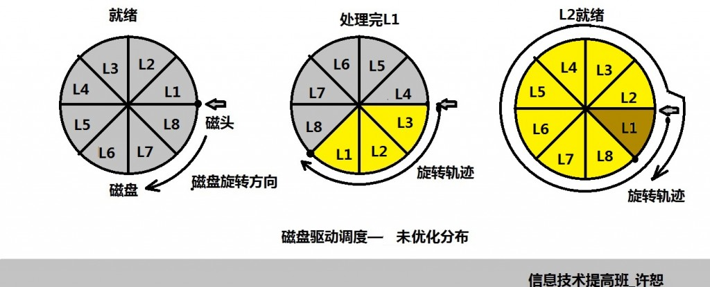

看操作系统的时候，我们常常被计算题搞得头晕脑胀，做题是，信息的优化分布搞得人很无语，但是细细研究，才发现原来世界这么简单啊！
首先我们明确几个基本的概念，很容易理解，很容易忽视：
1，磁盘工作后处理一个连续的作业中间没有特殊情况是不会停下来的，要动态地想问题。
2，磁道，扇区的关系是我们提前规划好的，题目中一般不会改变
3，磁头固定在某一磁道后是不会动的，这时可以看做是静止的，图中给出的是磁盘的旋转方向
下面我们动态地看看我们的磁盘的旋转情况：
某磁盘初始化：每个盘面8个扇区，现有八个记录 L1到L8，有一程序顺序处理这八个记录，每次读一个数据，磁盘转一圈为20ms,处理一个数据为5ms，计算顺序排列和优化分布程序处理完8个记录用的时间？
第一种情况：信息分布未优化

我们从图中可以知道从处理完L1到处理L2就绪中间有很多的时间是为了将磁头赚到L2块上
所以计算时要加上我们磁头寻找的时间：
8*（2.5+5）+7*15=165ms
优化分布就是处理完某一块后正好磁头转到将要处理的下一块上：
第二种情况：信息优化分布

实际上的优化分布就是节省磁头寻找的时间，让时间充分利用！
所以我们的计算为：
8*（2.5+5）=60ms
这样大家算题是不是就可以简单了呢？